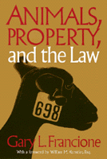

How to balance the failure of the legal system to protect animals with its professed recognition of animal rights
How to balance the failure of the legal system to protect animals with its professed recognition of animal rights


 How to balance the failure of the legal system to protect animals with its professed recognition of animal rights
How to balance the failure of the legal system to protect animals with its professed recognition of animal rights

|  |
Animals, Property, and the LawGary L. Francione, foreword by William M. Kunstler, Esq.paper EAN: 978-1-56639-284-6 (ISBN: 1-56639-284-5) |
"Here is a work of unquestionable historic importance the likes of which the world of ideas has never seen before: profound in its conception, execution, and its possible consequences. Gary Francione brings a real world understanding second to none in how American law impacts animals. It will be of interest to professionals in law, philosophy, government, veterinary medicine, and political science, but also among those who 'use' animals and those who profess the desire to protect them."
—Tom Regan, North Caroling State University
"Pain is pain, irrespective of the race, sex, or species of the victim," states William Kunstler in his foreword. This moral concern for the suffering of animals and their legal status is the basis for Gary L. Francione's profound book, which asks, Why has the law failed to protect animals from exploitation?
Francione argues that the current legal standard of animal welfare does not and cannot establish fights for animals. As long as they are viewed as property, animals will be subject to suffering for the social and economic benefit of human beings.
Exploring every facet of this heated issue, Francione discusses the history of the treatment of animals, anticruelty statutes, vivisection, the Federal Animal Welfare Act, and specific cases such as the controversial injury of anaesthetized baboons at the University of Pennsylvania. He thoroughly documents the paradoxical gap between our professed concern with humane treatment of animals and the overriding practice of abuse permitted by U.S. law.
Excerpt available at www.temple.edu/tempress
"Francione plunges into the maelstrom of the animals rights debate with a compelling and provocative analysis of the consequences of characterizing nonhuman animals as property. This book will undoubtedly spark a debate that will have widespread repercussions for the ways in which we think about animals. A must-read for anyone interested in the intellectual basis of animal rights."
—Priscilla Cohn, Pennsylvania State University
"Gary Francione's important contribution to the history of ideas places animal exploitation in its legal, philosophical, and economic context. A thorough, scholarly, and much-needed analysis that should be considered seriously even by those who disagree with the notion of animal rights."
—William A. J. Watson, University of Georgia
"Francione's analysis reflects his practical experience as a lawyer who has been at the cutting edge of litigating animal rights cases for over a decade.... [It] is meticulously researched and rigorously argued, but is written with a level of clarity often lacking in books about legal subjects. It is my expectation that this book will provoke our rethinking about the status of animals as property and the consequent denial of justice that they suffer under the law."
—William M. Kunstler, Esq., from the Foreword
Foreword – William M. Kunstler, Esq.
Preface and Acknowledgments
Introduction: Legal Welfarism: The Consequences of the Property Status of Animals
Part I: The Status of Animals as Property
1. The Problem: "Unnecessary" Suffering and the "Humane" Treatment of Property
2. The Dominion of Humans over Animals, the "Defects" of Animals, and the Common Law
3. Two Examples of Legal Welfarism
4. The Exclusion of Animal Interests from Legal Consideration—the Doctrine of Standing
5. Laws and Rights: Claims, Benefits, Interests, and the Instrumental Status of Animals
Part I Conclusion
Part II: A General Application of the Theory: Anticruelty Statutes
6. The Purposes of Anticruelty Statutes
7. Anticruelty Statutes and the Protection of the Institutionalized Exploitation of Animals
Part II Conclusion
Part III: A Specific Application of the Theory: The Regulation of Animal Experimentation
8. Animal Experimentation: Animal Property and Human "Benefit"
9. The Federal Animal Welfare Act
10. The Administrative Regulation of the Animal Welfare Act
11. The Animal Welfare Act in the Courts
Part III Conclusion
Epilogue: An Alternative to Legal Welfarism?
Explanation of Legal Citations
Notes
Selected Bibliography
Index
 | Gary L. Francione is Professor of Law and Nicholas de B. Katzenbach Scholar of Law at Rutgers University Law School, Newark. He is also Co-director of the Rutgers Animal Rights Law Center. |
Animals and Society
Law and Criminology
Ethics and Action, edited by Tom Regan.
No longer active.
© 2015 Temple University. All Rights Reserved. This page: http://www.temple.edu/tempress/titles/1156_reg.html.